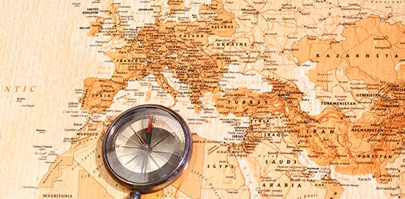
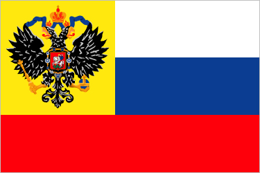
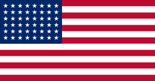
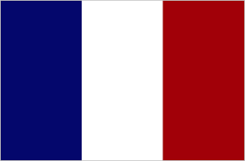
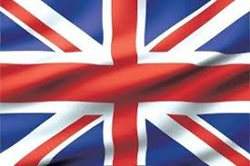
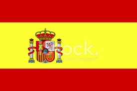

World History
 World history- global history is a field of historical study that emerged centuries ago, with leaders such as Voltaire, Hegel, Karl Marx and Arnold J. Toynbee. The field became much more active in terms of university teaching, text books, scholarly journals, and academic associations in the late 20th century. It examines history from a global perspective. It is not to be confused with comparative history, which, like world history, deals with the history of multiple cultures and nations, but does not do so on a global scale. World history looks for common patterns that emerge across all cultures. World historians use a thematic approach, with two major focal points: integration (how processes of world history have drawn people of the world together) and difference (how patterns of world history reveal the diversity of the human experiences).
The advent of world history as a distinct academic field of study can be traced to the 1960s, but the pace quickened in the 1980s. A key step was the creation of the World History Association and graduate programs at a handful of universities. Over the next decades scholarly publications, professional and academic organizations, and graduate programs in World History proliferated. World History has often displaced Western Civilization in the required curriculum of American high schools and universities, and is supported by new textbooks with a world history approach.
Russian Empire
Russian Empire, historical empire founded on November 2 (October 22, Old Style), 1721, when the Russian Senate conferred the title of emperor (imperator) of all the Russias upon Peter I. The abdication of Nicholas II on March 15, 1917, marked the end of the empire and its ruling Romanov dynasty.
 The empire had its genesis when the Russian nobility sought a new bloodline for its monarchy. They found it in Michael Romanov, a young boyar (nobleman), who was elected tsar in 1613. The early Romanovs were weak monarchs. Crowned at age 17, Michael shared the throne during the crucial years of his reign with his father, the patriarch Philaret. Michael’s son Alexis came to the throne in 1645 at age 16; he was much under the influence first of Boris Ivanovich Morozov and then of the patriarch Nikon. Fyodor III, a boy of just 14 at the time of his accession in 1676, also yielded much power to favourites. In spite of this, all three were popular tsars who left behind a good reputation among the people and whom the Slavophiles of the 19th century idealized as model Russian monarchs. Government during this period usually rested in the hands of individuals who for one reason or another exercised personal influence over the tsars. Popular dissatisfaction usually turned against these favourites rather than the tsar himself, such as during the urban uprisings (1648–50) that led to the exile of Morozov, and the great peasant rebellion (1670–71) led by the Cossack Stenka Razin.
United States
The history of the United States is what happened in the past in the United States, a country in North America. Native Americans lived in the Americas for thousands of years. English people in 1607 went to the place now called Jamestown, Virginia. Other European settlers went to the colonies, mostly from England and later Great Britain. France, Spain, and the Netherlands also colonized North America. In 1775, a war between the thirteen colonies and Britain began when the colonists were upset over tyrannical British policies. Just after dawn on April 19, 1775 the British attempted to disarm the Massachusetts militia at Concord, Massachusetts[source?], thus beginning the war with the "Shot Heard Round the World." On July 4, 1776, Founding Fathers wrote the United States Declaration of Independence. They won the Revolutionary War and started a new country. They signed the constitution in 1787 and the Bill of Rights in 1791. General George Washington, who had led the war, became its first president. During the 19th century, the United States gained much more land in the West and began to become industrialized. In 1861, several states in the South attempted to leave the United States to start a new country called the Confederate States of America. This caused the American Civil War. After the war, Immigration resumed. Some Americans became very rich in this Gilded Age and the country developed one of the largest economies in the world.
 In the early 20th century, the United States became a world power, fighting in World War I and World War II. Between the wars, there was an economic boom called the Roaring Twenties when people became richer and a bust called the Great Depression when most were poorer. The Great Depression ended with World War II. The United States and the Soviet Union entered the Cold War. This included wars in Korea and Vietnam. During this time, African-Americans, Chicanos, and women sought more rights. In the 1970s and 1980s, the United States started to make fewer things in factories. The country then went through the worst recession it had since the Great Depression. In the late 1980s the Cold War ended, helping the United States out of recession. The Middle East became more important in American foreign policy, especially after the September 11 attacks in 2001.
France
The first written records for the history of France appeared in the Iron Age. What is now France made up the bulk of the region known to the Romans as Gaul. Roman writers noted the presence of three main ethno-linguistic groups in the area: the Gauls, the Aquitani, and the Belgae. The Gauls, the largest and best attested group, were Celtic people speaking what is known as the Gaulish language. Over the course of the 1st millennium BC the Greeks, Romans and Carthaginians established colonies on the Mediterranean coast and the offshore islands. The Roman Republic annexed southern Gaul as the province of Gallia Narbonensis in the late 2nd century BC, and Roman forces under Julius Caesar conquered the rest of Gaul in the Gallic Wars of 58–51 BC. Afterwards a Gallo-Roman culture emerged and Gaul was increasingly integrated into the Roman Empire.
 France was one of the Allied Powers in World War II, but was conquered by Nazi Germany in 1940. The Third Republic was dismantled, and most of the country was controlled directly by Germany while the south was controlled until 1942 by the collaborationist Vichy government. Living conditions were harsh as Germany drained away food and manpower, and many Jews were killed. Charles de Gaulle led the Free France movement that one-by-one took over the colonial empire, and coordinated the wartime Resistance. Following liberation in summer 1944, a Fourth Republic was established. France slowly recovered economically, and enjoyed a baby boom that reversed its very low fertility rate. Long wars in Indochina and Algeria drained French resources and ended in political defeat. In the wake of the Algerian Crisis of 1958, Charles de Gaulle set up the French Fifth Republic. Into the 1960s decolonization saw most of the French colonial empire become independent, while smaller parts were incorporated into the French state as overseas departments and collectivities. Since World War II France has been a permanent member in the UN Security Council and NATO. It played a central role in the unification process after 1945 that led to the European Union. Despite slow economic growth in recent years, it remains a strong economic, cultural, military and political factor in the 21st century.
England
The British Isles became inhabited more than 800,000 years ago, as the discovery of stone tools and footprints at Happisburgh in Norfolk has revealed.[1] The earliest evidence for early modern humans in North West Europe, a jawbone discovered in Devon at Kents Cavern in 1927, was re-dated in 2011 to between 41,000 and 44,000 years old.[2] Continuous human habitation in England dates to around 13,000 years ago (see Creswellian), at the end of the last glacial period. The region has numerous remains from the Mesolithic, Neolithic and Bronze Age, such as Stonehenge and Avebury. In the Iron Age, all of Britain south of the Firth of Forth, was inhabited by the Celtic people known as the Britons, including some Belgic tribes (e.g. the Atrebates, the Catuvellauni, the Trinovantes, etc.) in the south east. In AD 43 the Roman conquest of Britain began; the Romans maintained control of their province of Britannia until the early 5th century.
 The end of Roman rule in Britain facilitated the Anglo-Saxon settlement of Britain, which historians often regard as the origin of England and of the English people. The Anglo-Saxons, a collection of various Germanic peoples, established several kingdoms that became the primary powers in present-day England and parts of southern Scotland.[3] They introduced the Old English language, which largely displaced the previous British language. The Anglo-Saxons warred with British successor states in western Britain and the Hen Ogledd (Old North; the Brythonic-speaking parts of northern Britain), as well as with each other. Raids by Vikings became frequent after about AD 800, and the Norsemen settled in large parts of what is now England. During this period, several rulers attempted to unite the various Anglo-Saxon kingdoms, an effort that led to the emergence of the Kingdom of England by the 10th century.
Spain
The history of Spain dates back to the Middle Ages. In 1516, Habsburg Spain unified a number of disparate predecessor kingdoms; its modern form of a constitutional monarchy was introduced in 1813, and the current democratic constitution dates to 1978. After the completion of the Reconquista, the Crown of Castile began to explore across the Atlantic Ocean in 1492, expanding into the New World and marking the beginning of the Golden Age under the Spanish Empire. The kingdoms of Spain were united under Habsburg rule in 1516, that unified the Crown of Castile, the Crown of Aragon and smaller kingdoms under the same rule. Until the 1650s, Habsburg Spain was among the most powerful states in the world. During this period, Spain was involved in all major European wars, including the Italian Wars, the Eighty Years' War, the Thirty Years' War, and the Franco-Spanish War. In the later 17th century, however, Spanish power began to decline, and after the death of the last Habsburg ruler, the War of the Spanish Succession ended with the relegation of Spain, now under Bourbon rule, to the status of a second-rate power with a reduced influence in European affairs. The so-called Bourbon Reforms attempted the renewal of state institutions, with some success, but as the century ended, instability set in with the French Revolution and the Peninsular War, so that Spain never regained its former strength.
Spain after 1814 was destabilised as different political parties representing "liberal", "reactionary", and "moderate" groups throughout the remainder of the century fought for and won short-lived control without any being sufficiently strong to bring about lasting stability. The former Spanish Empire overseas quickly disintegrated with the Latin American wars of independence. Only Cuba and the Philippines and some small islands were left; they revolted and the United States acquired ownership (or control, in the case of Cuba) after the Spanish–American War of 1898.